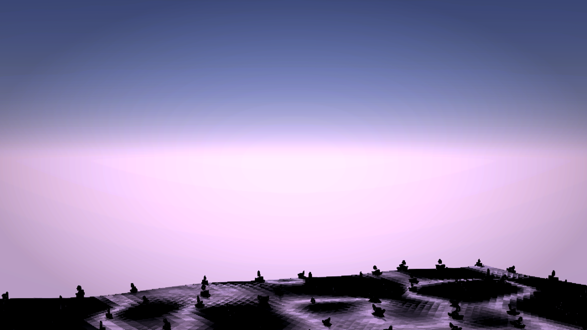
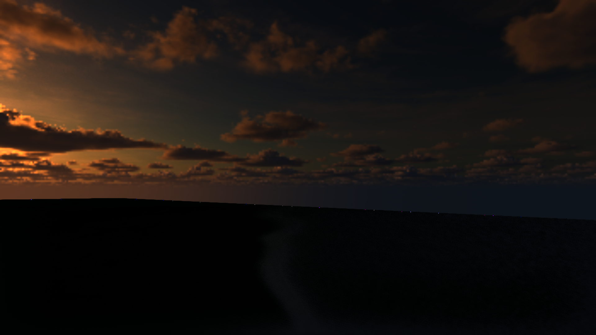
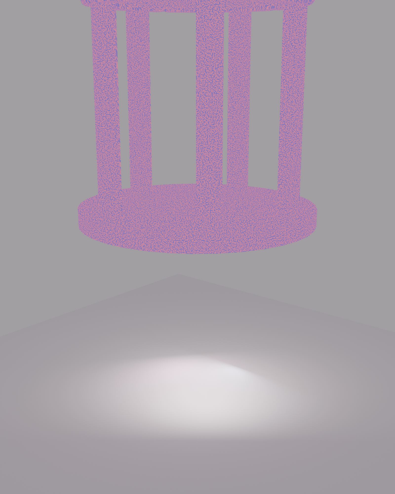
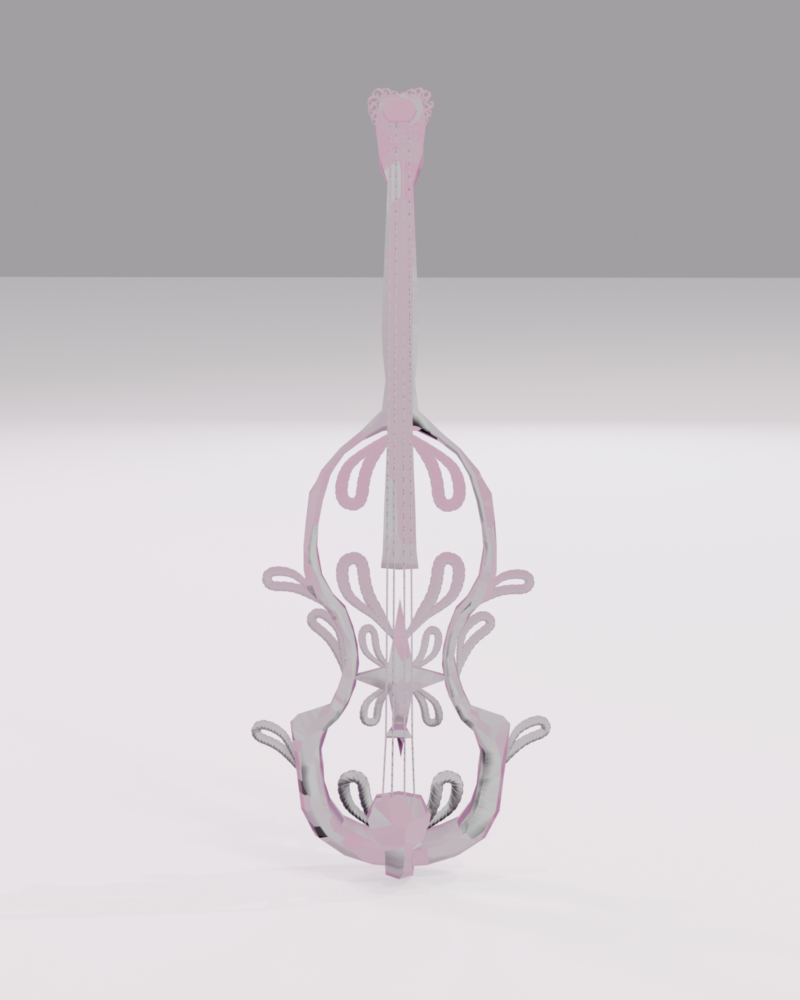
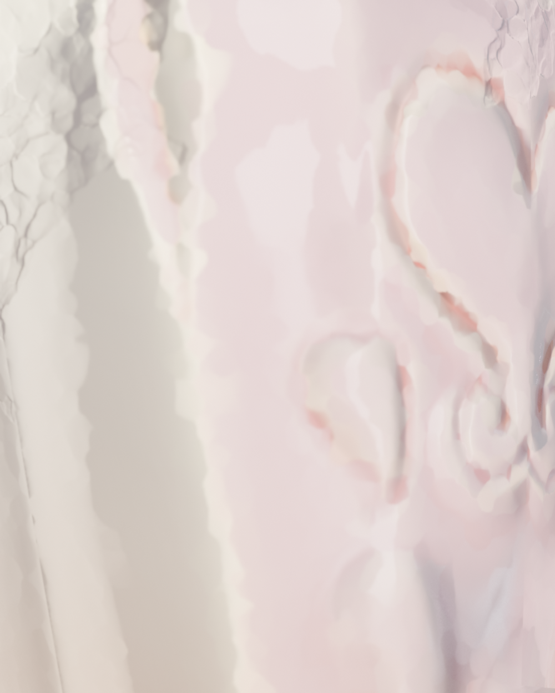
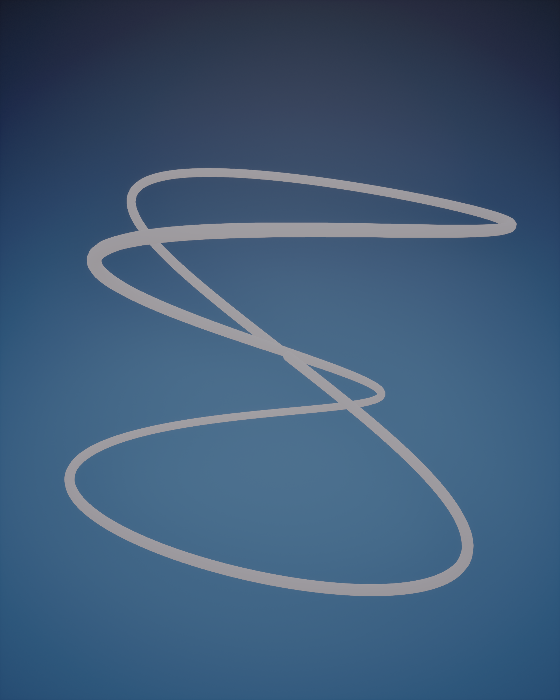
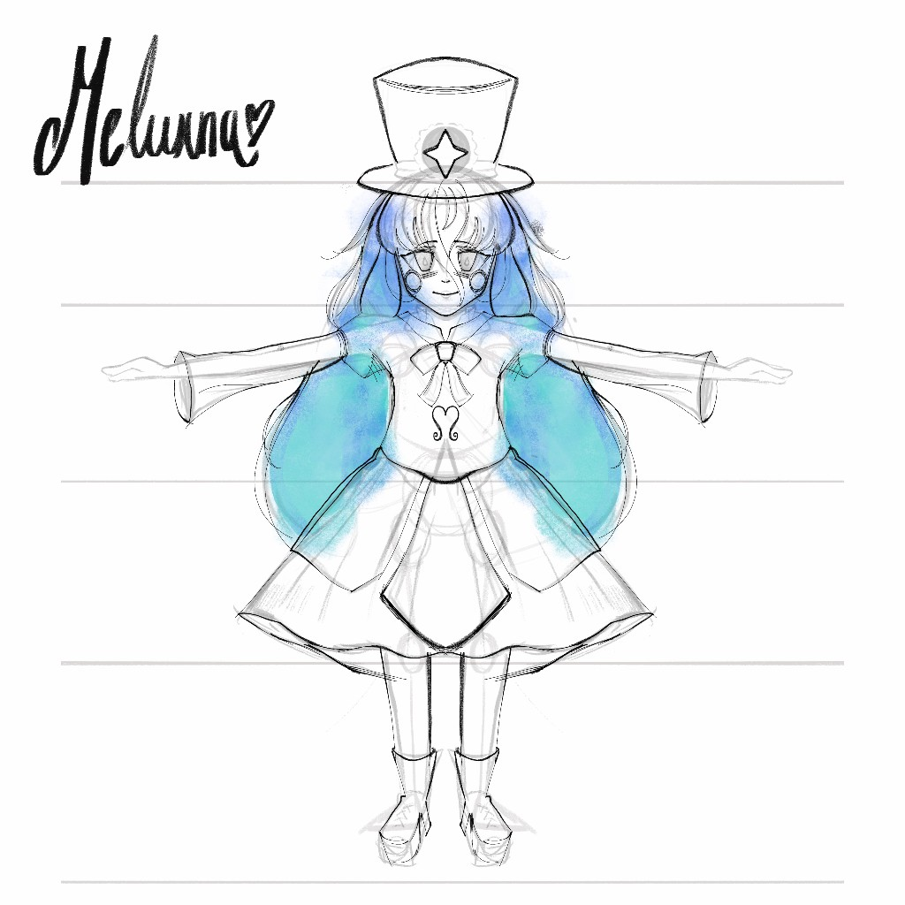
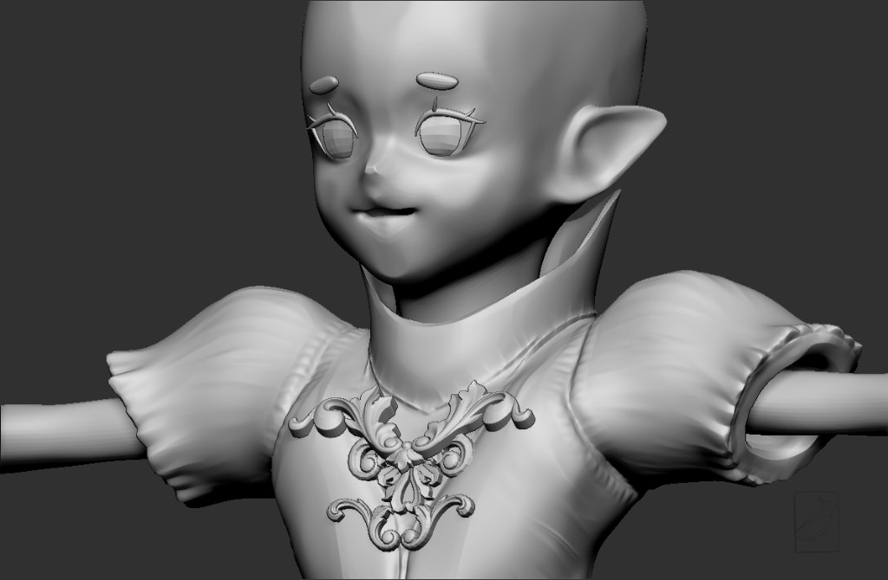

Selected works · art first
The things I want you to remember.
A living moodboard of character, environment, sculpture, ornament, and strange, beautiful objects — arranged by visual rhythm before category.
01 · Selected works
Image before explanation.
A deliberately narrow edit: dominant images, smaller echoes, and tactile details. Open any work for the full-resolution plate.


02 · Environment studies
Worlds begin as light, terrain, and surface.
The strongest reviewed environment frames in the archive: composition, terrain form, atmosphere, and stylized light. Canonical world names stay off until the image itself proves them.

{kind=link}

{kind=link}

03 · Objects & ornament
Small things deserve drama too.
Architectural fragments, instruments, and props become the small pins between larger world images.

{kind=link}

{kind=link}

{kind=link}

{kind=link}

04 · Studies
The hand underneath the polish.
Sketch and sculpt fragments stay in the board as traces of the hand underneath the finished surfaces.
{kind=link}

{kind=link}

Keep looking
The gallery ends before the work does.
For process, systems, shaders, topology, runtime work, and the broader render archive, continue into the project pages.